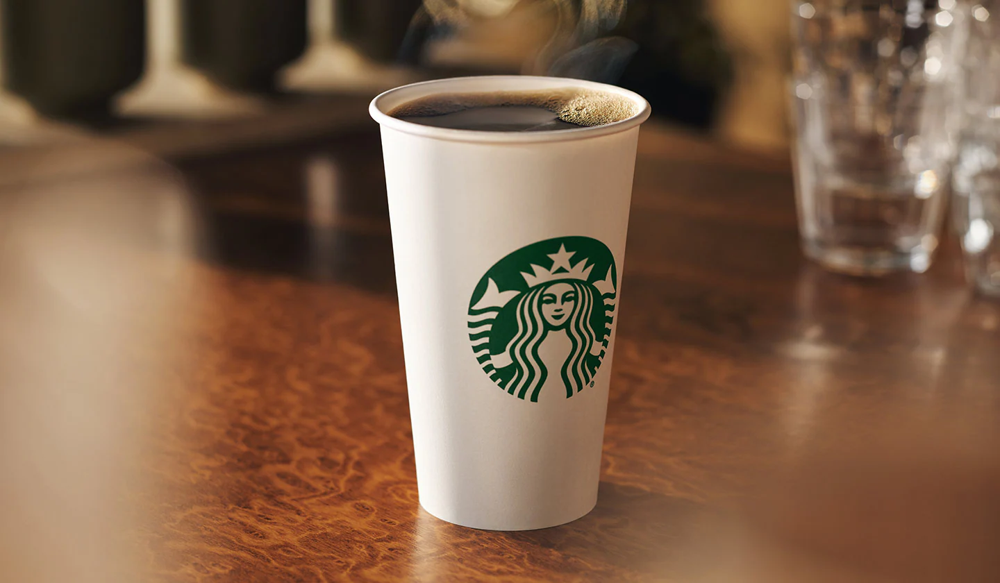
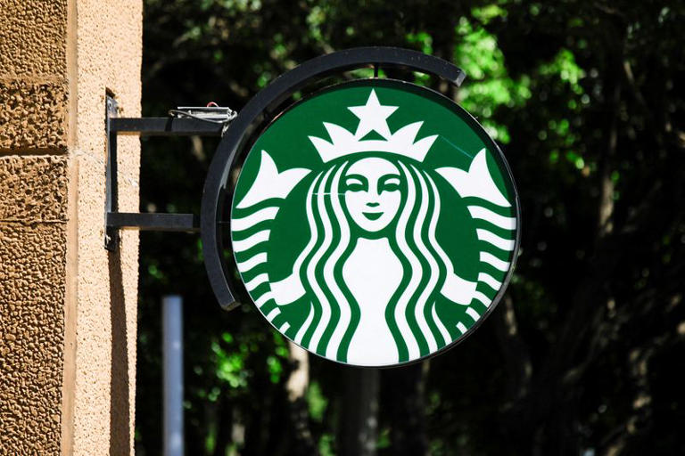

Our company

Our heritage
Our story begins in 1971 along the cobblestone streets of Seattle's historic Pike Place Market. It was here where Starbucks opened its first store, offering fresh-roasted coffee beans, tea and spices from around the world for our customers to take home. Our name was inspired by the classic tale, “Moby-Dick,” evoking the seafaring tradition of the early coffee traders. Ten years later, a young New Yorker named Howard Schultz would walk through these doors and become captivated with Starbucks coffee from his first sip. After joining the company in 1982, a different cobblestone road would lead him to another discovery. It was on a trip to Milan in 1983 that Howard first experienced Italy's coffeehouses, and he returned to Seattle inspired to bring the warmth and artistry of its coffee culture to Starbucks. By 1987, we swapped our brown aprons for green ones and embarked on our next chapter as a coffeehouse. Starbucks would soon expand to Chicago and Vancouver, Canada and then on to California, Washington, D.C. and New York. By 1996, we would cross the Pacific to open our first store in Japan, followed by Europe in 1998 and China in 1999. Over the next two decades, we would grow to welcome millions of customers each week and become a part of the fabric of tens of thousands of neighborhoods all around the world. In everything we do, we are always dedicated to Our Mission: With every cup, with every conversation, with every community - we nurture the limitless possibilities of human connection.
Coffee & Craft
It takes many hands to craft the perfect cup of coffee - from the farmers who tend to the red-ripe coffee cherries, to the master roasters who coax the best from every bean, and to the barista who serves it with care. We are committed to the highest standards of quality and service, embracing our heritage while innovating to create new experiences to savor.

Our Partners
We like to say that we are not in the coffee business serving people, but in the people business serving coffee. Our employees - who we call partners - are at the heart of the Starbucks experience. We are committed to making our partners proud and investing in their health, well-being and success and to creating a culture of belonging where everyone is welcome.

We Believe in the Pursuit of Doing Good
As it has been from the beginning, our purpose goes far beyond profit. We believe Starbucks can, and should, have a positive impact on the communities we serve.
